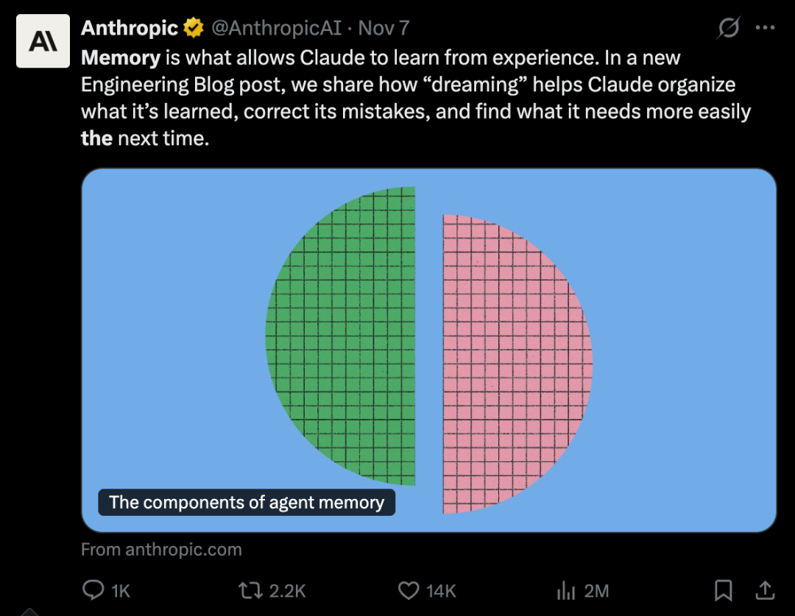
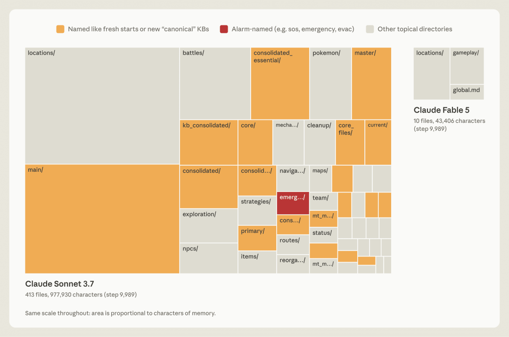
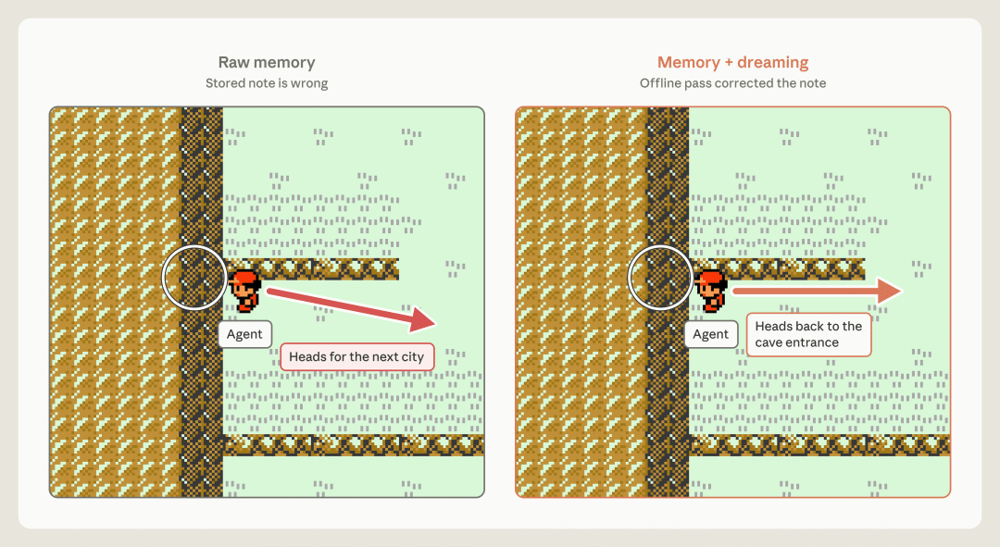
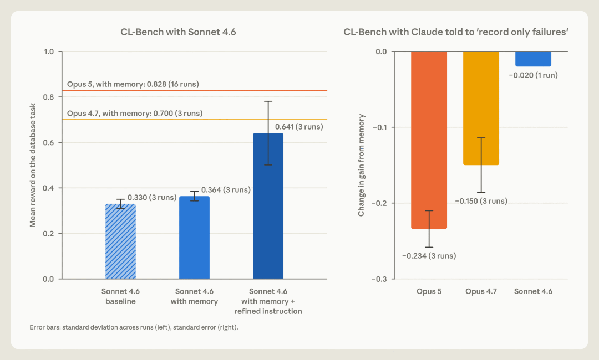
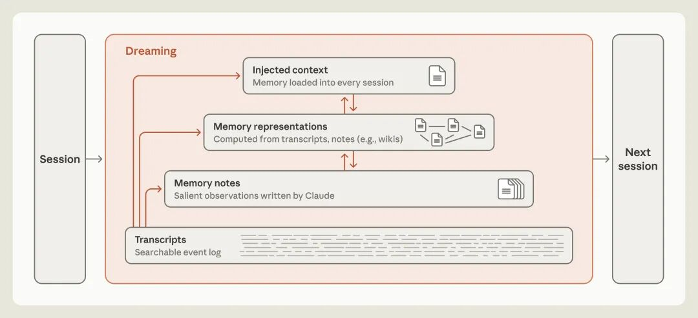
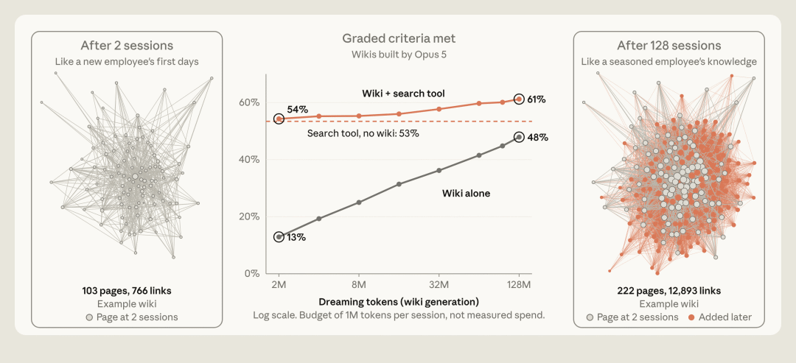
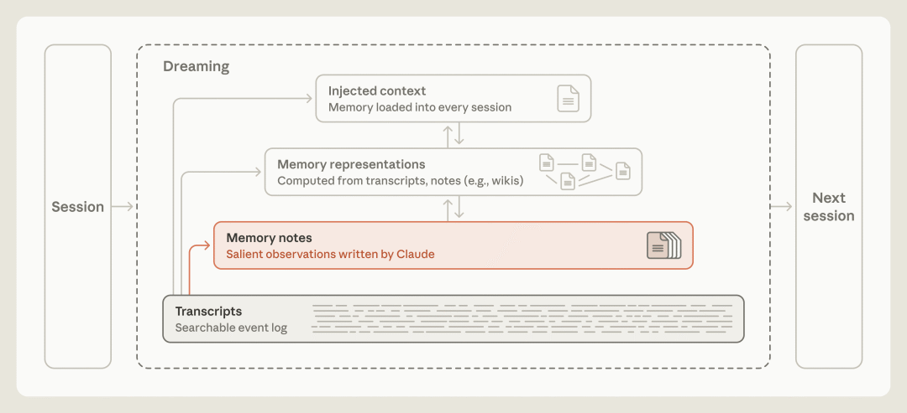
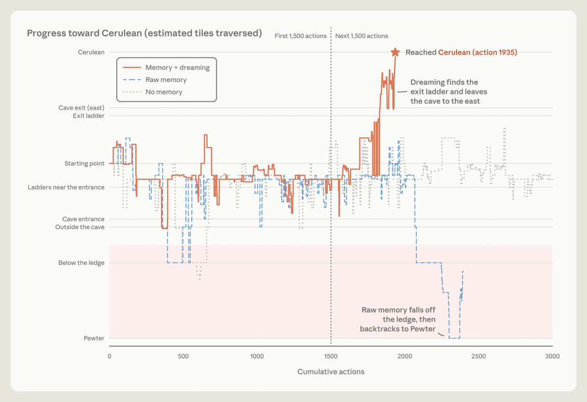
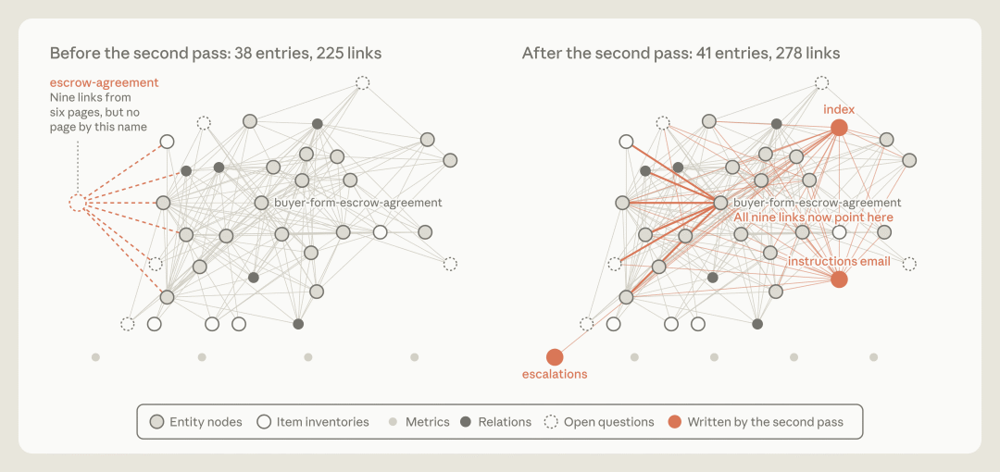
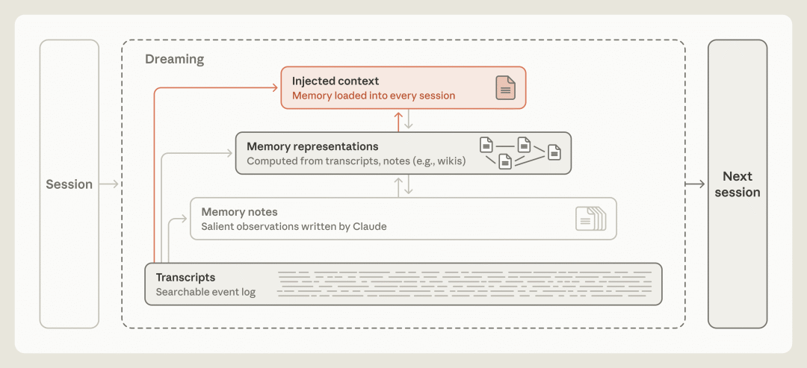

刚刚！Anthropic首次公开Claude记忆架构！
Datawhale干货
作者：Anthropic团队
Anthropic 官方研究团队刚刚正式公开了一篇长文《The components of agent memory》，首次系统披露了 Claude 内部的长期记忆架构设计。

对于正在研发长程 Agent 的团队来说，跨会话的状态沉淀与记忆持久化始终是最卡脖子的难题。在实际工程中，许多团队做 Agent 记忆时的做法普遍粗暴：要么无脑把上一轮对话全量追加到当前上下文，要么外挂一个向量数据库把历史记录一股脑切块灌入，结果导致上下文迅速被琐碎细节占满，模型甚至被自己写下的错误前文带偏，陷入死循环。
Anthropic 这次拿出了完全不同的思路，并且已经跑在了 Claude Code 与 Managed Agents 的生产环境里。它的核心解法不是教大家去选型哪个数据库，而是搭建了一套包含四层金字塔与“离线梦境（Dreaming）”的动态闭环系统。
在这篇文章中，我们为大家系统拆解这套记忆架构到底是怎么设计的、各个组件如何协同运转，希望能为正在搭建长程 Agent 的开发者提供一份前沿的工程参考。
一、传统外挂记忆的两个缺陷
在讨论具体设计之前，必须先厘清一个经常被混淆的前提：并不是所有能留存信息的地方，都叫 Agent 的“长期记忆”。
在模型体系中，信息存留通常有三种方式：第一种是模型训练期间固化的内部参数权重（Weights）；第二种是单个会话上下文窗口内的即时少样本学习（In-context learning）；第三种是为了防止超长对话爆窗口而由模型自行生成的阶段性摘要（Compaction）。
Anthropic 明确界定，这里讨论的 Agent 记忆，专门指 Agent 从实际任务与交互中习得、并且能够跨会话持久留存、供后续轮次随时自主读取的知识与规则。
划清这条边界之后，我们来看看过去传统外挂记忆为什么总是行不通。
- 记下所有细节，反而把模型拖垮了
很多开发者的直觉是：Agent 记性越好、记的细节越多，能力就越强。但在长程动态环境中，这个假设完全站不住脚。
Anthropic 用 Claude 运行《宝可梦 红版》（Pokémon Red）做了一组极具反差的对比实验。在这项极其复杂的长程任务中，早期模型 Sonnet 3.7 采取了事无巨细的记录策略：每遇到一场野外战斗、拾取一个道具、与一位 NPC 对话，它都单独建一个文件存盘。
结果，当游戏推进到约第 10,000 步时，Sonnet 3.7 已经写下了 413 个文件、分布在 225 个文件夹中，累计占用了 977,930 字符。

Treemap 面积直观对比：Sonnet 3.7 事无巨细的滥记拖垮了行动带宽，而 Fable 5 凭借 10 个策略文件稳步拿到 4 枚徽章。
这种庞大记忆不仅没有帮到模型，反而成了沉重的负担。由于游戏环境在不断动态演化，事无巨细的记录会迅速过期失效。到了第 10,000 步前后，Sonnet 3.7 开始建立它的第 4 个主记忆目录；在随后的连续 17 步中，它创建了 6 个文件、删除了 9 个文件，所有算力和上下文都在忙于整理这些笔记，在游戏里没有推进任何有效操作，最终仅勉强拿到 1 枚道馆徽章。
相反，更成熟的模型 Fable 5 仅仅保留了 10 个文件（总计 43,406 字符），却顺利拿到 4 枚徽章；后续的 Opus 5.5 也采用紧凑策略直接通关。
记忆从来都不是免费的资产，它本身也是一种高昂的负债。 没有过滤机制的滥记，不仅会白白烧掉 Token，更会严重稀释模型的注意力，让 Agent 陷入“为了记笔记而记笔记”的僵死状态。
- 记错一条笔记，引发后续会话连环崩盘
在线记录的第二个原罪是：在线生成的笔记不可避免地会包含主观偏差或事实错误。
在宝可梦的月见山（Mt. Moon）任务中，存在一个致命的单向地形：洞穴入口旁潜藏着一个单向台阶，跳下去就会掉回刚走过的路线，无法原路攀爬。
在某次会话中，Claude 在在线笔记里错误地记下一句：“宝可梦中心在山洞东侧”。走出大门后，它依据这条错误笔记断定“月见山已经走完了”，随即跳下了单向台阶，直接摔回原点。

月见山单向台阶现场：未修正的错误笔记让 Agent 陷入无休止跳崖循环，修正后的笔记指引它调头重返洞穴。
更致命的是由于导航工具无法感知高低落差，Claude 误以为自己向西走过头了，在笔记里加倍坚信自己走在正确道路上。在后续的会话中，每一次进入游戏的新 Agent 都无条件信任前人留下的错误笔记，导致角色连续 3 次跌落同一个台阶摔回原路，最终陷入死循环直接放弃，整场任务宣告失败。
这种现象被称为错误记忆的级联崩溃：当系统缺乏事实校准机制时，一条错误的长期记忆，会像病毒一样污染之后所有的独立会话。
二、Agent 到底该记什么？
既然事无巨细地记录会拖垮系统，那么第一道防线显然是在输入端建立严格的筛选。
1. 只记隐性规则，不记易变事实
面对环境中涌来的海量信息，Anthropic 得出了一条极其关键的分类判据：区分易变事实与隐性规则。
在任何长程环境中，信息都可以清晰地划分为两类：
易变事实（Ephemeral Facts）：例如“NPC 当前站在哪个坐标”、“背包里还剩几个伤药”、“某张网页当前的 DOM 结构”。这类信息在屏幕上肉眼可见，且随时在动态刷新。把它们记入长期记忆毫无价值，因为模型直接重新看一眼屏幕的代价，远比从记忆库里调出可能已经过期的旧记录要便宜且准确得多；
隐性规则与策略模型（Latent Rules）：例如“这个洞穴出去后千万不能跳右侧台阶”、“该 API 在并发调用时必须先拿锁”、“某类复杂报错的根因是环境变量缺失”。这类经验无法直接从当前的单帧屏幕中读出，必须由模型在多次跨会话的探索、碰撞与失败中提炼得出。
真正的长期记忆，只应该承载第二类信息。
2. 别用死板的 Prompt 限制强模型
那么，如何让 Agent 学会只记有价值的隐性规则？过去许多工程团队的做法是：在 Prompt 里给 Agent 写下一堆死板的限制，比如“严禁记录具体坐标”、“只准记录失败教训”。
但 Anthropic 在 CL-Bench 评测中的实验结果，给出了一个反直觉的警告：这种死板的规则，对强大的模型反而是负向约束。

提示词对记忆收益的影响：限制过严会让强模型（Opus 5）收益大跌 0.234，而宽松提示能让弱模型表现更佳。
实验数据显示：
- 当研究人员向强大的 Opus 5 施加严苛的限制性提示词（强制它只记录失败经验）时，模型的平均奖励从 0.828 暴跌至 0.594，收益净损失了 0.234；
- 相反，如果给予明确的方向引导（提示它先读记忆再验证假设），原本能力较弱的早期模型 Sonnet 4.6 跑分近乎翻倍；而更强大的模型如 Sonnet 5 则无需提示便能自主高频调阅记忆。
这揭示了一条极其重要的架构哲学：越强大的模型，系统越不应该用死板的规则去锁死它的记录动作。 强模型的优势恰恰在于它能敏锐权衡当前情境的显著性。工程架构该做的事，不是替它做决定，而是为它提供分层的存储容器与事后修正的自愈管道。
三、Claude 的四层记忆金字塔
在解决了“记什么”的筛选哲学之后，核心问题来到了存储结构：沉淀下来的经验，究竟应该以怎样的形式组织？
Anthropic 在文章中正式公开了 Claude 的内部记忆分层模型。这套架构不是平铺直叙的单一向量库，而是一套严密的四层金字塔：

四层记忆金字塔架构：从底层海量原始记录，逐步向上提炼为笔记、Wiki 表示与顶层注入索引。
这四层自底向上依次为：
- 底层：原始执行流水（Transcripts） 这是整个架构的基石。它无损记录了 Agent 过去的完整对话历史、工具调用参数、执行结果与外部环境反馈。它是整个系统唯一的真实底账（Ground Truth），支持关键词检索与全文检索；
- 第二层：记忆笔记（Memory Notes） 在每次会话运行过程中，Claude 自主打标签或写入的显著观察（Salient Events）。它记录了单次任务的局域教训，通常以平铺的 Markdown 笔记形式存在；
- 第三层：知识地图与网络（Wiki / Knowledge Representation） 这是整个架构中最具生产力的一层。系统不会让零散的笔记无限累加，而是利用离线算力，把碎片化的笔记抽象、归纳并交叉链接成一张结构化的 Markdown Wiki 网络；
- 第四层：开局注入上下文（Injected Context） 当一个全新会话启动时，系统自动预加载进上下文的极轻量摘要。它绝不包含海量细节，而是充当最高级别的元数据导航。
这种分层设计彻底重塑了记忆的利用效率。以软件工程代码库 Stainless 的实测为例：
如果让 Agent 每次都去底层数以万计的原始流水中捞取代码规范，单次检索往往要暴力吞掉上万 Token 的上下文，而且检索命中极度不稳定。
Anthropic 让 Claude 在处理该任务的 128 轮交互中，持续将学到的模式沉淀成结构化的 Markdown Wiki。

Stainless 128 轮 Wiki 生长：知识网络不断自愈裂变，任务评测奖励曲线同步大幅攀升。
随着交互深入，这张 Wiki 从最初零星的几个孤立页面，动态演化成包含多级目录、交叉双向链接、包含明确架构规范的知识网络。量化结果显示：当 Agent 协同查阅这张紧凑的 Wiki 地图与搜索工具时，在跨语料问答评测中不仅准确率显著攀升，平均每个问题还减少了约 20,000 Token 的盲目检索开销。
四、离线梦境：Agent 的夜间纠错机制
如果只搭建了上面四层金字塔，这套系统依然可能因为一条错误笔记而走向崩溃（正如前面提到的月见山跳崖惨剧）。
因为在在线交互时，模型的所有算力都在疲于应对当下的任务，它根本没有余力回看全局，更容易在局部压力下记下充满偏差的结论。
为了解决这个闭环难题，Anthropic 引入了被称为“离线梦境（Dreaming）”的自我对账与演化引擎。
这个命名的灵感直接源于认知神经科学：人类大脑在清醒时负责收集经历，而在进入慢波睡眠与快速眼动睡眠（REM）时，海马体会进行高频的离线回放（Hippocampal Replay），将白天的短期记忆重放、修剪、剔除噪音，最终整合进大脑皮层的长期结构中。

Dreaming 运行机制：在离线状态下穿透各层，调取底层原始执行记录比对核验，重写错误笔记。
在 Agent 系统中，Dreaming 拥有三大不可替代的工程特性：
- 对照底层流水底账，推翻线上的错误总结
在线生成的笔记只是一层易腐烂的二次加工缓存。当 Agent 闲下来进入 Dreaming 阶段时，系统会启动专用的审判模型，直接调取底层最原始、未经任何修饰的执行流水（Transcripts）。
在月见山的惨痛教训后，研究人员让系统执行了一次离线 Dreaming。审判模型对比了角色的实际移动坐标流水与上层笔记，立刻抓出了破绽：“笔记声称宝可梦中心在东侧，但底层流水证明角色走出大门向东走直接坠崖重置”。
Dreaming 当场删除了这条虚假笔记，将其重写为：“穿过月见山后切勿向右侧悬崖跳跃，必须返回洞内向北行进”。
在随后针对华蓝市（Cerulean City）的长程实测中，经过 Dreaming 修正的 Agent 在第 1,935 步顺利穿越月见山抵达华蓝市；而未修正的对照组由于记忆错误在同一台阶连续跌落 3 次，最终彻底迷失倒退回深灰市，任务宣告失败。

长程实测对比：经过离线 Dreaming 纠偏的 Agent（修正组）顺利穿越月见山抵达华蓝市，未修正组在悬崖处迷航折返。
- 拓扑结构的自动修补与去重
除了事实层面的纠错，Dreaming 还承担着“知识地图园丁”的职责。
当知识网络不断扩张时，死链（Broken links）和孤岛页面不可避免地会出现。在第二轮 Dreaming 过程中，模型会自动遍历整张 Markdown Wiki，扫描所有被引用但尚未创建的文件名，自动根据历史记录把缺失的页面补齐；同时把被多次验证的临时教训合并为通用规范，剔除已过期的临时记录。

知识拓扑自愈：Dreaming 自动检测出死链并重定向，生长出缺失的核心策略页面。
五、Claude Code 的生产落地实践
很多技术论文描绘的架构极尽奢华，但一旦推向生产环境，高昂的延迟、膨胀的 Token 成本和脆弱的上下文管理就会让系统彻底崩塌。
Anthropic 在文章中给出了他们将这套架构落地到实际生产工具（如 Claude Code）时的真实工程做法。
- 只加载前 200 行：顶层做目录，底层做仓库
很多开发者在尝试做跨会话记忆时，容易把累积下来的记忆文件无节制地塞进 System Prompt。但在生产环境中，过长的预置指令会导致模型对核心任务的指令遵循度呈断崖式下跌，同时还会成倍推高每一次调用的首字延迟与开销。
Claude Code 采取了极其硬核的截断设计：在每次会话启动时，它绝不全量加载 MEMORY.md，而是严格限制只加载前 200 行或 25 KB 文本。

生产级访问路径：顶层注入轻量目录索引，底层知识按需检索深读。
这前 200 行充当的完全是目录索引的角色：它只告诉模型“我已经掌握了哪些模块的知识、这些细节分别存放在底层的什么路径下”。
当模型在后续执行中需要某项具体规范时，它会拿着索引指引，主动通过本地工具发起按需检索。顶层做目录，底层做仓库，化解了上下文容量与信息完整性之间的矛盾。
- 生产环境里的三个工程权衡
在真实业务中部署这套记忆架构时，Anthropic 提醒开发者必须在三个核心维度上做好工程权衡：
第一是写入时机的权衡（在线捕获 vs 离线梳理）。在线记录的好处是能趁热打铁捕获当下的显著性事件，但写笔记的动作本身会挤占模型宝贵的上下文带宽；离线 Dreaming 将整理开销转移到了后台，但需要付出额外的离线算力，且无法当场反哺当前轮次。
第二是记忆漂移与实效维护（定期剪枝 vs 全量沉淀）。长程记忆库绝不是一个只增不减的冷库。随着业务环境和代码库的演进，过期的记忆笔记如果不及时清理，就会误导未来的 Agent。系统不能无休止地全盘扫描所有历史，需要引入访问频次与置信度衰减机制，定期对陈旧记忆做退火与淘汰。
第三是检索与表示的平衡（轻量索引 vs 深度知识图）。单纯依赖原始流水检索，模型很容易在海量碎屑中迷失；而维护一份完美结构化的 Wiki，又需要持续投入大量的 Dreaming 算力。Anthropic 在实践中采取的折中，正是用轻量的 Markdown 索引结合底层的分块检索，在准确率与工程开销之间取得平衡。
生产级 Agent 记忆的精髓，从来不是把系统打造成吞下一切的垃圾桶，而是在每一个环节做精巧的减法。
写在最后
梳理完整套 Claude 记忆架构设计，其实可以提炼出三条对所有开发者都极具实操价值的底层法则：
- 不要盲信中间记忆，永远保留原始底账：记忆笔记只是一层易碎的二次加工缓存。无论上层结构怎么变，底层未加工的原始执行流水（Transcripts）必须无损存档，那是系统在发生级联崩溃时唯一的自愈抓手；
- 顶层做目录，底层做仓库：不要幻想把所有经验直接注入开局上下文。顶层只放精炼的小型索引目录，具体的规则与知识下沉到底层，由 Agent 依靠索引按需深读；
- 给强模型目标，不要写死死板规则：强模型的优势在于复杂的上下文理解与显著性权衡。与其用死板的硬编码规则去限制它该记什么、不该记什么，不如把精力放在搭建稳定的分层存储与离线对账闭环上。

** **
一起“点**赞”三连↓**